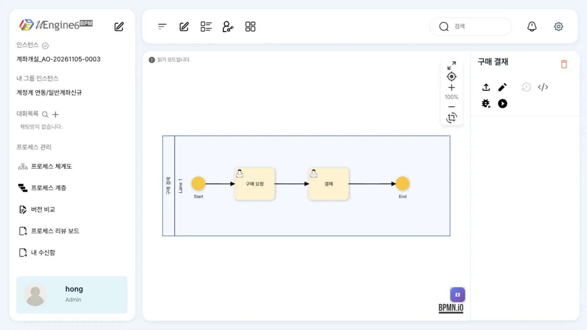
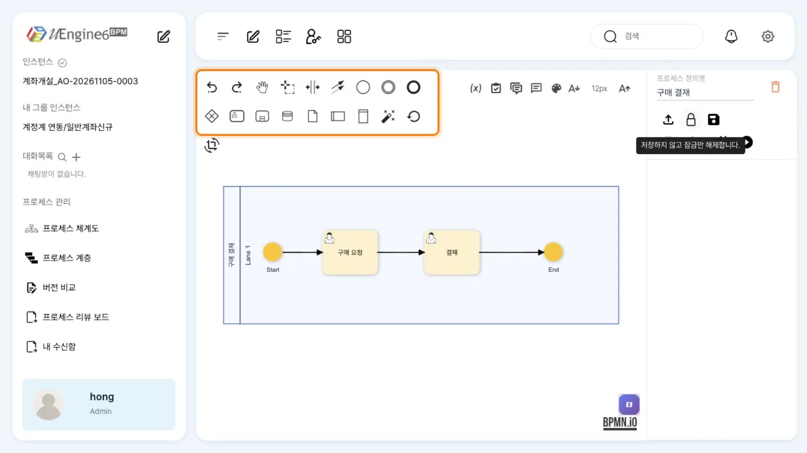
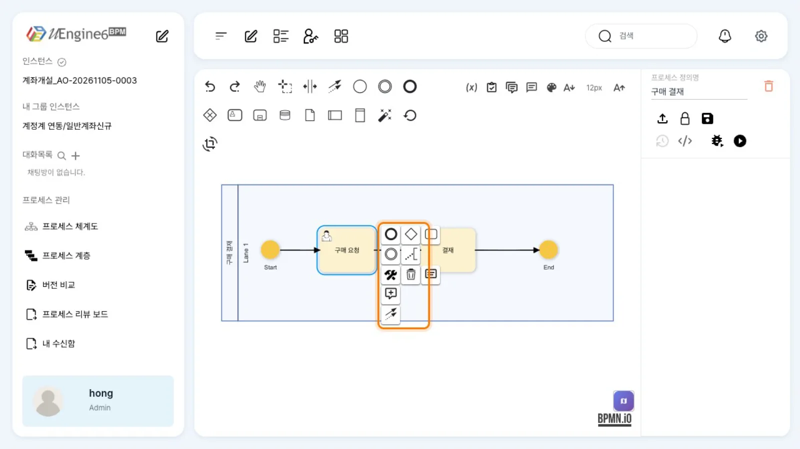
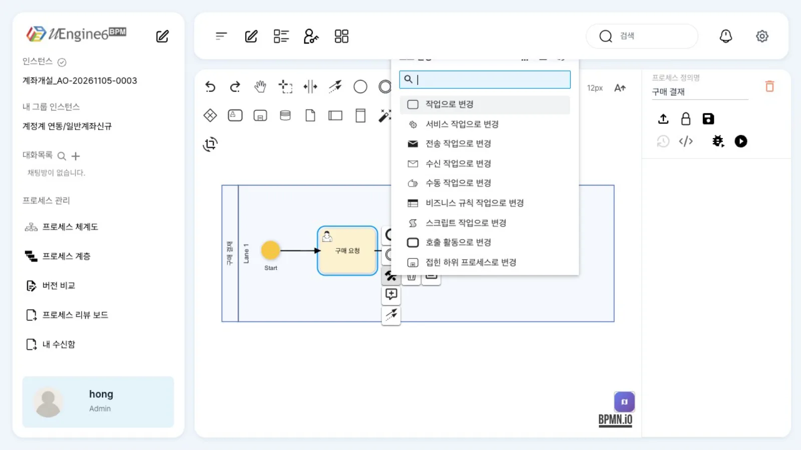
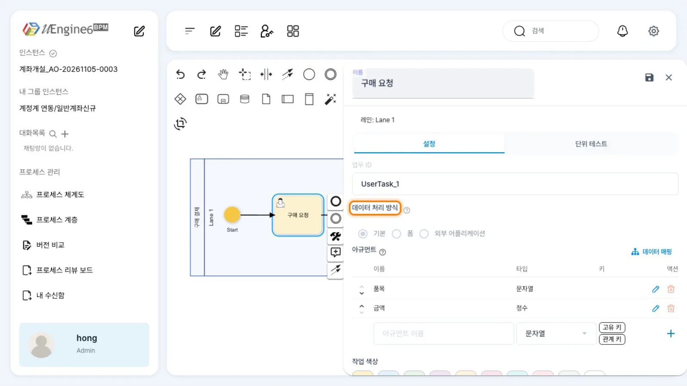
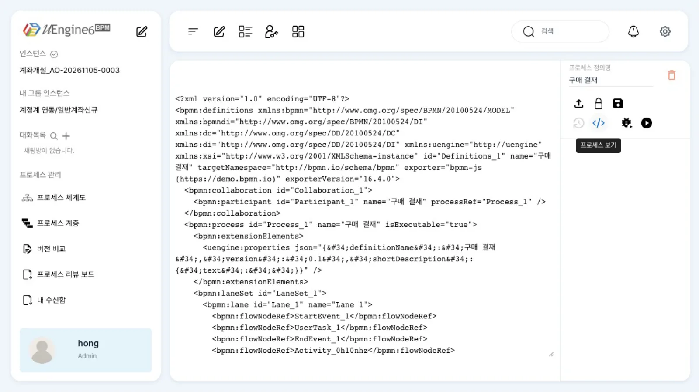
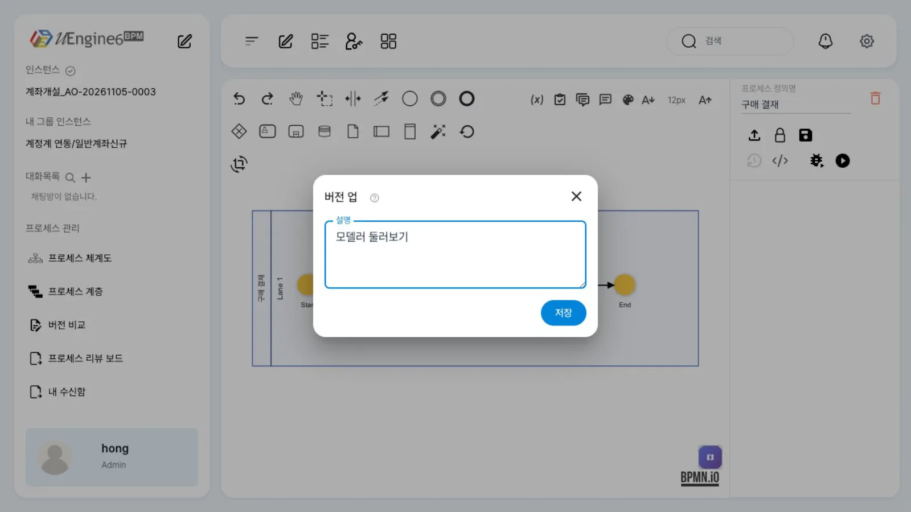

정의를 열고 편집 잠금을 건 뒤, 팔레트·컨텍스트 패드·렌치(바꾸기)·속성 패널·XML 보기를 차례로 써 보고 저장합니다. 이 브랜치의 저장은 같은 버전을 덮어씁니다.
무엇을 · 왜#
uEngine6의 모델러는 bpmn-js에 uEngine 속성 패널을 더한 화면입니다. 그림은 BPMN 2.0 XML로 저장되고, 작업·레인마다 엔진이 읽는 설정이 uengine:properties 안에 JSON으로 들어갑니다.
| 화면 요소 | 하는 일 | 정의에 남는 것 |
|---|---|---|
| 편집 잠금(연필 · 자물쇠) | 한 번에 한 사람만 정의를 고칠 수 있게 합니다 | 정의 파일이 아니라 definition-service의 잠금(/definition/lock) |
| 팔레트 | 새 요소를 캔버스에 놓습니다 | bpmn:* 요소와 그림 좌표(bpmndi) |
| 컨텍스트 패드 | 선택한 요소 옆에 뜨는 메뉴. 덧붙이기·연결·지우기·바꾸기·속성 | 같음 |
| 렌치(요소 변경) | 같은 자리의 요소를 다른 종류로 바꿉니다 | 요소 종류(bpmn:serviceTask 등)와 _type |
| 속성 패널 | 이름·업무 ID·데이터 처리 방식·아규먼트 등 | uengine:properties의 JSON |
| XML 보기 | 현재 그림을 BPMN XML로 봅니다 | — |
| 저장 | 정의 파일과 실행용 사본을 씁니다 | definitions/<아이디>.bpmn, archive/<아이디>.bpmn/<버전>.bpmn |
저장은 같은 버전을 덮어씁니다
저장 대화상자의 제목은 「버전 업」이지만, 이 브랜치의 uEngine 모드에는 마이너·메이저를 고르는 칸이 없고 버전이 오르지 않습니다. 영상에서도 저장 전후 모두 "version":"0.1"이고, archive/…/에는 0.1.bpmn 하나뿐입니다. 저장할 때마다 0.1을 덮어씁니다. 버전을 나누는 방법은 버전과 배포에 있습니다.
따라 하기#
첫 프로세스에서 만든 「구매 결재」의 사본 튜토리얼/모델러/구매결재로 실습합니다.
- 정의를 엽니다 — 읽기 모드.
/definitions/튜토리얼/모델러/구매결재를 열면 읽기 모드로 그림이 표시되어 편집할 수 없습니다. 오른쪽 위 아이콘은 「업로드」·「연필」·「XML 보기」·「시뮬레이션」·「실행」입니다.
읽기 모드 - 연필을 눌러 편집 잠금을 겁니다. 연필 자리에 「자물쇠」(툴팁 「저장하지 않고 잠금만 해제합니다.」)와 「디스켓」(저장)이 나타납니다. 이때 화면에서
PUT /definition/lock으로 잠금을 겁니다. - 팔레트. 왼쪽 위 아이콘 묶음입니다. 마우스를 올리면 이름이 표시됩니다.
| 묶음 | 항목(툴팁) |
|---|---|
| 도구 | 되돌리기 · 다시 실행 · 손(이동) 도구 · 선택영역 지정 도구 · 공간 생성/제거 도구 · 연결 도구 |
| 이벤트·게이트웨이·작업 | 시작 이벤트 생성 · 중간 이벤트 · 종료 이벤트 생성 · 독점 게이트웨이 생성 · 사용자 작업 생성 · 확장된 하위 프로세스 생성 |
| 데이터·풀 | 데이터 저장소 생성 · 데이터 객체 생성 · 풀/참가자 생성(가로·세로) |
| 배치 | 자동 레이아웃 · 레이아웃 복구 · 레이아웃 방향 전환 |

팔레트 - 컨텍스트 패드. 「구매 요청」을 한 번 누르면 옆에 메뉴가 뜹니다. 종료 이벤트·게이트웨이·작업·중간 이벤트·텍스트 주석 덧붙이기, 「요소 변경」(렌치), 「삭제」, 「속성 패널 열기」, 「코멘트 작성」, 「다른 요소에 연결」입니다. 작업 덧붙이기는 기존 흐름 사이에 새 작업을 끼워 넣습니다. 레인을 선택하면 레인 추가·나누기 메뉴가 나타납니다.

컨텍스트 패드 - 렌치 — 요소 바꾸기. 「요소 변경」을 누르면 사용자 작업을 다른 종류로 바꾸는 목록이 뜹니다. 서비스·전송·수신·수동·비즈니스 규칙·스크립트 작업, 호출 활동, 접힌·확장 하위 프로세스, 병렬·순차 다중 인스턴스, 반복입니다. Esc로 닫습니다. 각 요소가 이 브랜치에서 실행되는지는 BPMN 지원 범위를 보세요.

렌치 메뉴 - 속성 패널. 「구매 요청」을 두 번 누르면 오른쪽에 패널이 열립니다. 「설정」·「단위 테스트」 탭과 「이름」·「업무 ID」·「데이터 처리 방식」(「기본」·「폼」·「외부 어플리케이션」)·「아규먼트」·「데이터 매핑」·「작업 색상」 칸이 있습니다. 오른쪽 위 디스켓은 패널을 저장하고, X는 패널을 닫습니다.

속성 패널 - 도구 막대. 캔버스 오른쪽 위에는 「프로세스 변수」(x), 「승인 상태」, 「댓글」, 「채팅창 닫기」, 「Color Ruleset」, 글꼴 크기 축소·확대가 있습니다. 프로세스 변수는 다음 장에서 씁니다.
- XML 보기. 「XML 보기」(
</>)를 누르면 그림 대신 BPMN XML이 나옵니다. 사용자 작업의 설정이<uengine:properties json="…">에 들어 있습니다. 한 번 더 누르면(「프로세스 보기」) 그림으로 돌아옵니다.
XML 보기 - 저장. 기존 정의의 편집 모드에서 디스켓을 누르면 「버전 업」 대화상자(칸 「설명」, 버튼 「저장」)가 뜹니다. 설명을 적고 「저장」을 누릅니다. 버전은 그대로
0.1이고 같은 파일을 덮어씁니다.
저장 대화상자 - 저장 뒤에는 읽기 모드. 저장이 끝나면 화면은 읽기 모드(연필)로 돌아갑니다. 하지만 서버의 편집 잠금은 지워지지 않고 사용자 칸이
undefined인 채로 남습니다. 이 상태에서 다시 열면 연필을 누르지 않아도 바로 편집 모드입니다(홍길동으로 확인).
저장하지 않고 편집 끝내기 — 자물쇠
편집 모드에서 「자물쇠」를 누르면 저장하지 않은 변경 사항을 버리고 읽기 모드(연필)로 돌아갑니다. 화면은 변경 사항을 브라우저에 임시 백업한 뒤 서버의 정의를 다시 읽습니다(웹 화면 코드 lockOnly). 다만 이 브랜치에서는 자물쇠를 누른 같은 화면에서 연필을 다시 눌러도 편집 모드로 돌아가지 않았습니다(영상 촬영 중 확인, 원인은 확인하지 못함). 그래서 영상에서는 자물쇠 장면을 뺐습니다.
설정 레퍼런스#
아이콘과 요청#
| 아이콘(오른쪽 위) | 선택자(녹화 스크립트) | 요청 |
|---|---|---|
| 연필 — 편집 | button:has([style*="icon/pencil.svg"]) |
GET /definition/lock?path=…, PUT /definition/lock |
| 자물쇠 — 저장 없이 잠금 해제 | …icon/lock.svg |
GET /definition/lock?path=… → (내 잠금이면) DELETE /definition/lock?path=… → GET /definition/raw?defPath=… |
| 디스켓 — 저장 | …icon/save.svg |
PUT /definition/raw?defPath=<아이디>.bpmn, PUT /definition/map |
</> — XML 보기 / 프로세스 보기 |
…icon/code-xml.svg |
— |
| 벌레 — 시뮬레이션 | …icon/bug-play.svg |
POST /instance(simulation: true) — 배포 전에 시험하기 |
| 재생 — 실행 | [data-testid="process-execute-button"] |
POST /dry-run → POST /start-and-complete |
저장 전후(영상에서 확인한 값)#
uengine:json의 version |
archive/튜토리얼/모델러/구매결재.bpmn/ |
|
|---|---|---|
| 저장 전 | 0.1 |
0.1.bpmn |
| 「버전 업」 대화상자로 저장 후 | 0.1 |
0.1.bpmn |
편집 잠금은 정의 파일 밖(definition-service)에 있으므로 화면을 닫아도 남습니다. 저장 직후 GET /definition/lock?path=튜토리얼/모델러/구매결재.bpmn은 {"id":"튜토리얼/모델러/구매결재.bpmn","user_id":"undefined"}였습니다. 남은 잠금은 API로 지웁니다.
curl -s -X DELETE "http://localhost:8288/definition/lock?path=$(python3 -c 'import urllib.parse;print(urllib.parse.quote("튜토리얼/모델러/구매결재.bpmn"))')" \
-H "Authorization: Bearer $TOKEN"
알려진 제약#
| 증상 | 우회 |
|---|---|
| 「버전 업」 대화상자로 저장해도 버전이 오르지 않음 | 같은 버전을 덮어쓰는 동작입니다. 버전을 나누는 방법은 버전과 배포를 참고합니다 |
저장 뒤 서버 잠금이 {"user_id": "undefined"}로 남고, 다시 열면 곧바로 편집 모드 |
DELETE /definition/lock?path=…로 지웁니다. 「자물쇠」는 잠금의 사용자 칸이 내 ID일 때만 잠금을 지웁니다(웹 화면 코드 lockOnly) |
| 다른 사람(또는 다른 브라우저)의 잠금이 남아 있으면 연필을 눌러도 읽기 모드가 유지됨(「…님이 이미 수정 중입니다」 알림) | 잠금을 건 사람이 풀거나 관리자가 DELETE /definition/lock?path=…로 지웁니다 |
| 히스토리(버전) 아이콘이 비활성화되고 「버전 비교」 화면이 비어 있음 | GET /versions가 500입니다 |
작업 덧붙이기 직후 콘솔에 appendPreview is not defined |
동작에는 지장이 없습니다 |
| 자동 배치가 기존 요소와 겹침 | 덧붙이기 전에 뒤 요소(끝 이벤트 등)를 먼저 옮겨 둡니다 |
| 렌치 목록의 일부 요소(확장 하위 프로세스 등)는 실행되지 않음 | BPMN 지원 범위 |
확인 문제#
「버전 업」 대화상자로 저장하면 `archive/`에 새 버전 파일이 생기나요?
생기지 않습니다. 이 브랜치에서는 버전이 0.1 그대로이고 archive/<아이디>.bpmn/0.1.bpmn을 덮어씁니다.
저장한 뒤 서버의 편집 잠금은 어떻게 되나요?
지워지지 않고 사용자 칸이 undefined인 잠금으로 남습니다. 화면은 읽기 모드로 돌아가지만, 다시 열면 바로 편집 모드입니다. 잠금을 완전히 지우려면 DELETE /definition/lock?path=<아이디>.bpmn을 호출합니다.
사용자 작업을 서비스 작업으로 바꾸려면 어디를 누르나요?
작업을 한 번 눌러 컨텍스트 패드를 열고 「요소 변경」(렌치)에서 서비스 작업을 고릅니다. 변경하면 해당 작업의 _type과 패널 칸이 서비스 작업용으로 바뀝니다.